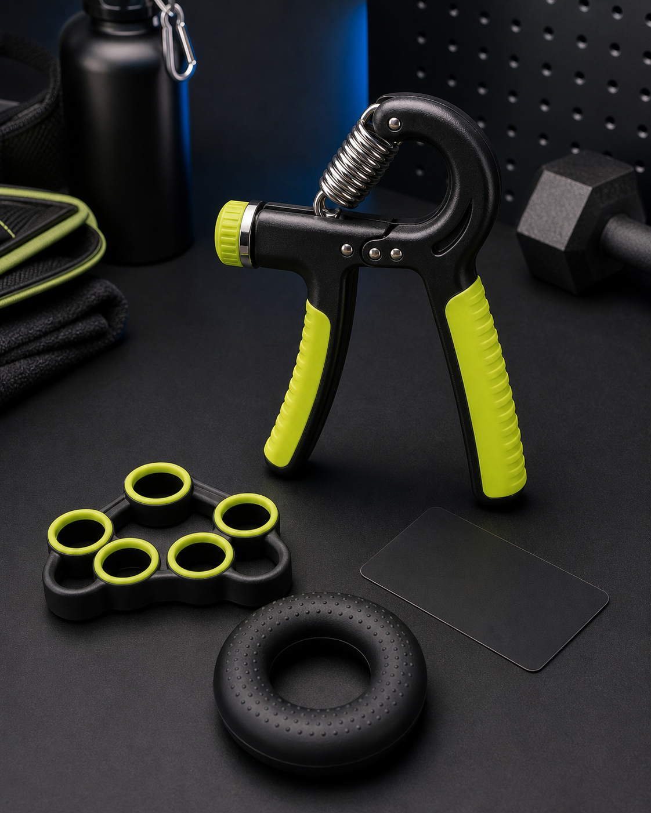
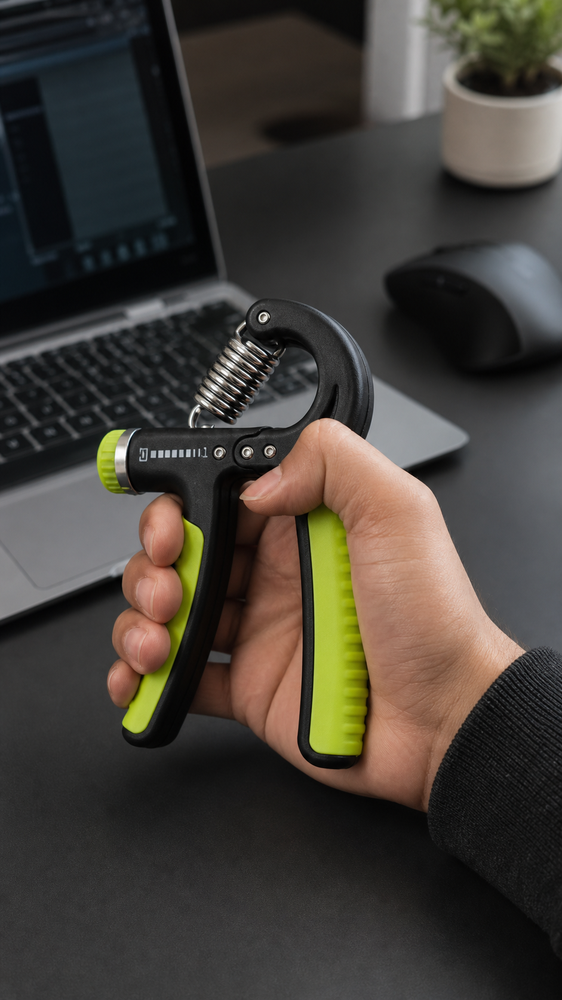
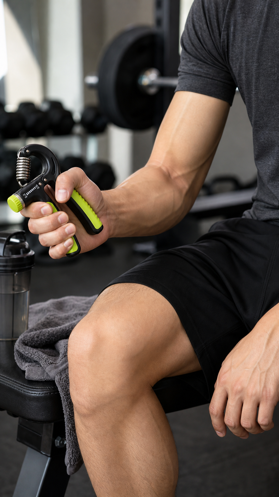
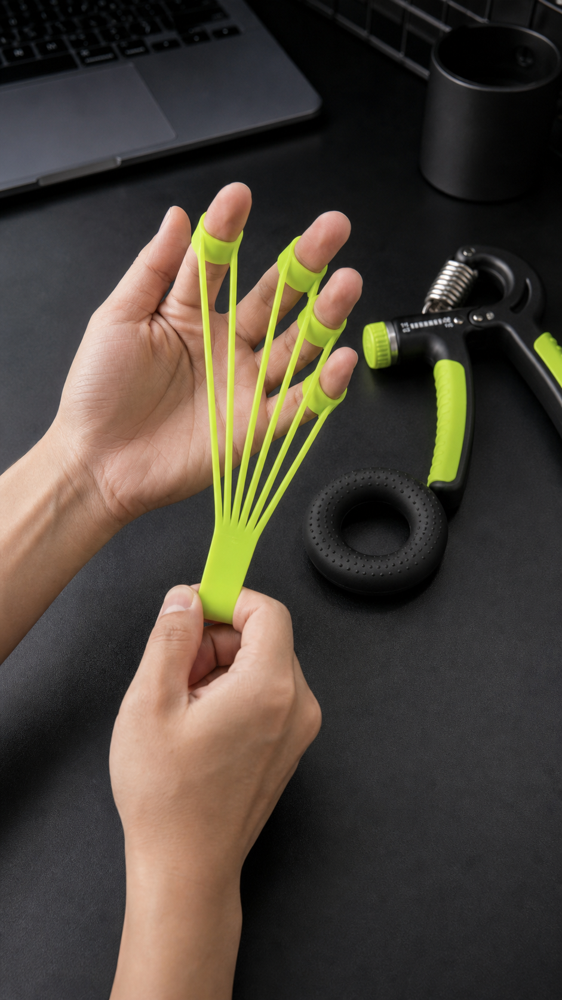

CJCJ Sport

Shot 01: product hero, no abstract animation
Open with the kit
Show what it is first.
Hand gripper, finger band, grip ring. Clear product, fast recognition.

Shot 02: hand + desk use
Desk break
Make the use visible.
Use a hand close-up so viewers understand the action immediately.

Shot 03: person context
After workout
Add a real scene.
Gym context makes it feel like a product test, not a fake ad.

Shot 04: accessory demo
7-day content test
Then test the clips.
Track watch time, saves, comments and profile visits before inventory.